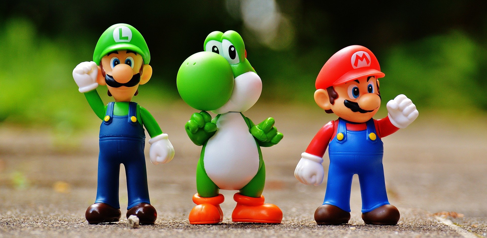

About Mario
Mario is the best on the Nintendo
Mario and his friends
Mario's Characteristics
- He has a red cap with M on it
- He is short but can jump high
- He has that funny looking mushtache
Mario's Friends
We can't forget the other characters in Super Mario Brothers who make the game so awesome. Luigi being his best friend and Yoshi, they both are his sidekicks. Click on the links below to find out more and how Mario first got started in arcade world.